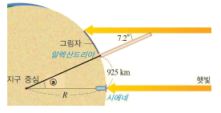
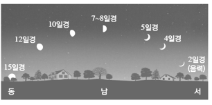
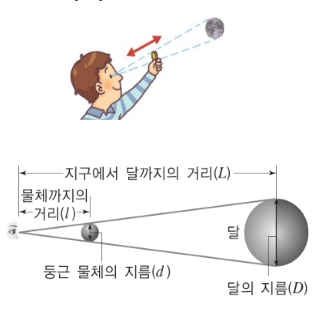

V. 물질의 특성
1. 물질의 특성
1. 주변에 있는 순물질과 혼합물
2. 물질이 뜨고 가라앉는 성질
3. 물질이 녹는 정도
교과서 설명
4. 물질의 상태가 변하는 온도
확인 문제
# 1
tips_and_updates 그림은 에라토스테네스가 지구의 크기를 측정한 방법을 나타낸 것이다. 에라토스테네스가 지구 크기 측정을 위한 가정과 측정 방법에 대한 설명으로 옳은 것만을 (보기)에서 있는 대로 고른 것은?

( 보 기 )
㉠ 지구는 타원체이다.
㉡ 중심각 ⓐ는 7.2°이다.
㉢ 지구로 들어오는 햇빛은 평행하다.
㉣ 원에서 부채꼴 중심각의 크기와 호의 길이는 반비례한다.
① ㉠, ㉡
② ㉠, ㉢
③ ㉡, ㉢
④ ㉡, ㉣
⑤ ㉢, ㉣
정답 : 3
해설 : 지구는 완전한 구형으로 가정한다.
출처 : 2021년 1학기 중간고사
# 2
tips_and_updates 그림은 북반구에서 매일 해가 진 직후 같은 시각에 관측한 달의 위치와 모양을 나타낸 것이다. 이와 같이 달의 위치와 모양이 변하는 까닭을 옳게 설명한 것은?

① 지구가 공전하여 태양이 보이는 위치가 달라지기 때문이다.
② 태양이 지구 주위를 1년 동안 동쪽에서 서쪽으로 이동하기 때문이다.
③ 달이 동쪽에서 서쪽으로 하루에 한 바퀴씩 자전하기 때문이다.
④ 달이 지구 주위를 서쪽에서 동쪽으로 공전하기 때문이다.
⑤ 지구가 동쪽에서 서쪽으로 하루에 한 바퀴씩 자전하기 때문이다.
정답 : 4
해설 : 달이 지구 주위를 서쪽에서 동쪽으로 공전하기 때문에 달의 위치와 모양이 달라진다.
출처 : 2021년 1학기 중간고사
# 3
tips_and_updates 지구 자전과 관련된 설명으로 옳은 것은?
① 자전 방향은 동쪽에서 서쪽이다.
② 태양이 동쪽에서 떠서 서쪽으로 진다.
③ 달이 서쪽에서 동쪽으로 매일 조금씩 이동한다.
④ 계절에 따라 밤하늘에 보이는 별자리가 변한다.
⑤ 별과 같은 천체가 하루에 한 바퀴씩 실제로 원을 그리면서 도는 일주 운동을 한다.
정답 : 2
해설 : 지구가 서쪽에서 동쪽으로 자전하기 때문에 천체(태양, 달, 별)가 동쪽에서 떠서 서쪽으로 지는 것처럼 보이는 겉보기 운동을 한다.
출처 : 2021년 1학기 중간고사
# 4
tips_and_updates 그림과 같이 지름이 d인 둥근 물체를 앞뒤로 움직여 지름이 D인 보름달이 정확하게 가려지도록 하였다. 지구에서 달까지의 거리를 L, 눈에서 둥근 물체까지의 거리를 이라고 할 때, 이에 대한 설명으로 옳은 것만을 (보기)에서 있는 대로 고른 것은?

( 보 기 )
㉠ 물체의 크기는 가까이 있으면 작게 보인다.
㉡ 삼각형의 닮음비를 이용하여 달의 지름을 구할 수 있다.
㉢ 달의 지름을 구하기 위한 비례식은 L : l = d : D 이다.
㉣ 지름이 d보다 작은 둥근 물체를 사용하면 눈에서 물체까지의 거리( l )는 짧아진다.
① ㉠, ㉡
② ㉠, ㉢
③ ㉡, ㉢
④ ㉡, ㉣
⑤ ㉢,㉣
정답 : 4
해설 : 눈과 둥근 물체의 지름을 연결한 삼각형과 눈과 달의 지름을 연결한 삼각형은 닮은 도형이므로 닮음비를 적용할 수 있다.
출처 : 2021년 1학기 중간고사
# 5
tips_and_updates 그림은 태양, 지구, 달의 상대적인 위치를 나타낸 것이다.

(1) ㉠～㉤ 중에서 초저녁부터 해뜨기 전까지 밤중 내내 볼 수 있는 달의 기호와 위상을 옳게 연결한 것은?
①
②
③
④
⑤

(2) ㉥에 있는 달에 대한 설명으로 옳은 것은?
① 초승달이다.
② 달의 위치는 망이다.
③ 그믐달로 왼쪽 반원이다.
④ 오른쪽 반원으로 하현달이다.
⑤ 지구에서는 달이 보이지 않는다.
정답 : (1) 3 , (2) 5
해설 : (1) 달이 지구를 중심으로 태양의 반대편에 있을 때를 망이라 하며, 이때 보름달로 보인다. 보름달은 태양이 지면 동쪽에서 뜨고, 한밤중에 남중하였다가 태양이 뜨면 서쪽으로 지므로 초저녁부터 새벽까지 볼 수 있다.
(2) 달이 지구와 태양 사이에 있을 때를 삭이라 하며 이때 지구에서는 달이 보이지 않는다.
출처 : 2021년 1학기 중간고사